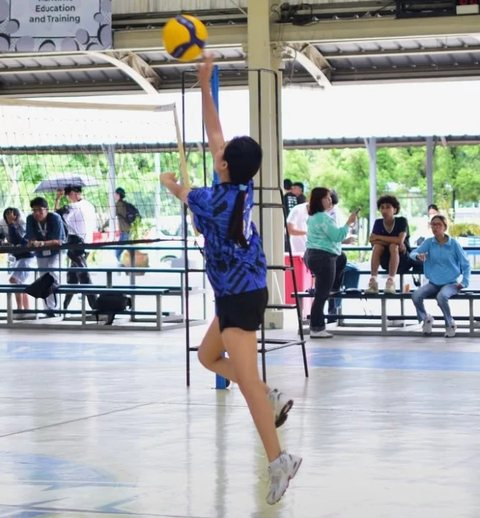
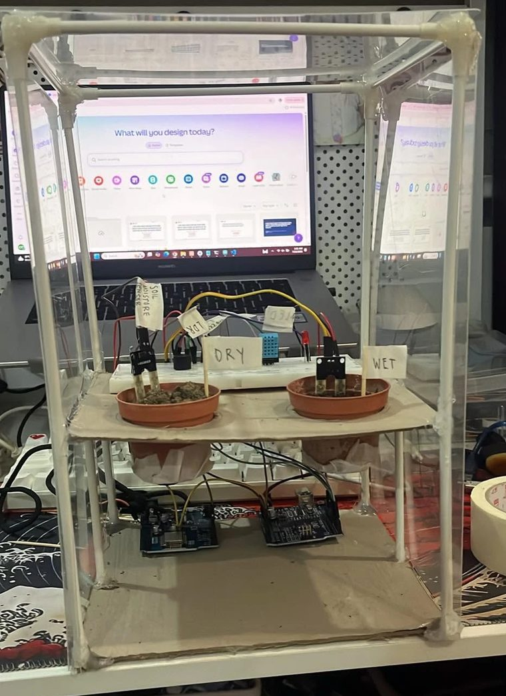
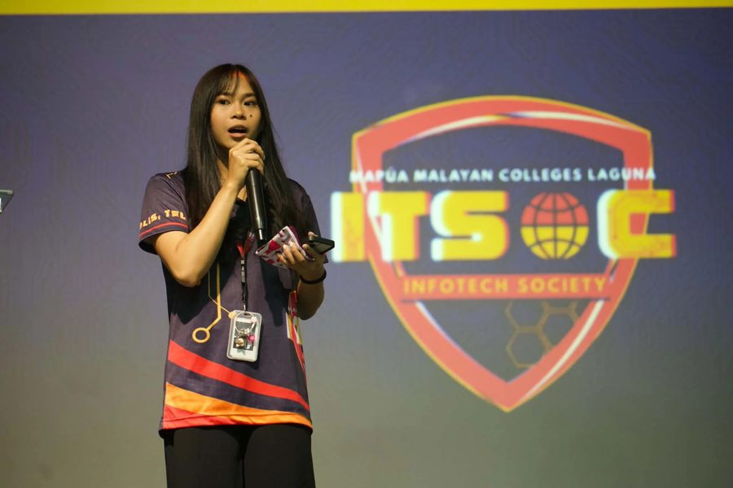
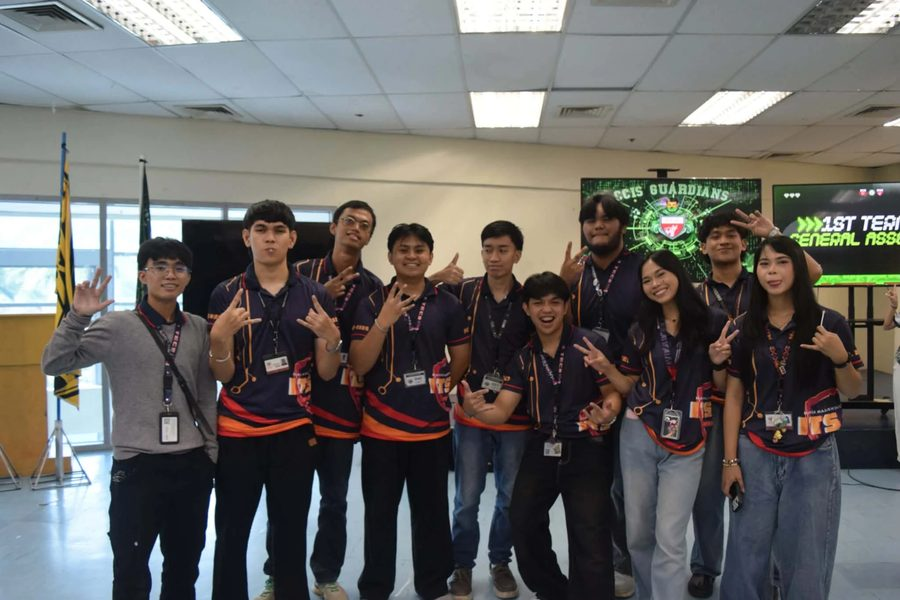
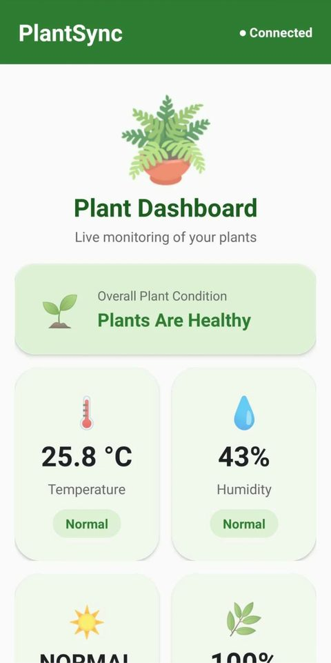
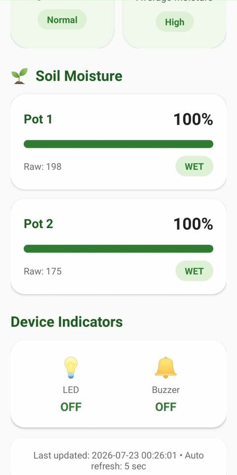

Programming Languages
Languages I use to build web systems, APIs, Android apps, and embedded IoT code.
PythonC#C/C++KotlinPHPSQLHTMLCSS
BS IT – Cybersecurity Student · Developer · Creative Thinker
I build web systems, databases, and IoT projects with security in mind, and I’m currently looking for an OJT / IT internship where I can learn from experienced IT professionals.
My resume is available on request. Email christelleann922@gmail.com and I’ll send it over.

photo: Joseph BoholHi! I’m Christelle Ann L. Solis, a BS Information Technology student specializing in Cybersecurity at Mapúa Malayan Colleges Laguna. I’ve worked on web development, database integration, IoT systems, and implementing security features, from a career profiling system protected with AES-256-GCM encryption to a smart plant monitor with its own Android app. I’m now looking for an IT internship where I can apply what I’ve learned, strengthen my practical skills, and contribute to real team projects.
Technologies, tools, and skills I’ve explored along the way.
Languages I use to build web systems, APIs, Android apps, and embedded IoT code.
Designing, querying, and managing data in an organized, efficient way.
Configuring and troubleshooting networks, and building security into the systems I make.
The tools I use to code, test, version, and design my projects.
A collection of projects where ideas meet functionality.
A web-based career profiling system, currently in development, that matches Senior High School students to career paths using content-based filtering and cosine similarity, with security features that help protect student profile and assessment data.

prototypeSmart plant monitoring system with app integration.
A few pages from my story: the chapters I’ve written, and the one I’m about to begin.
Chapter 01 · Education
The Beginning
Mapúa Malayan Colleges Laguna
2023 – 2027 · Cybersecurity track
Where I’m building my foundation in software, systems, and security, and where I’ve been a Dean’s Lister for six terms.
Chapter 02 · Capstone
Building My Ideas
Web-based career profiling system
2026 · Backend & Database Developer
Development, implementation, testing, and documentation of a system that matches Senior High School students to career paths, secured with AES-256-GCM encryption and role-based access control.
Chapter 03 · Internship
The Next Chapter
486 required training hours
An upcoming chapter. Placement details will be added once confirmed.
Upcoming chapter

Organization · 2025 – 2026
Leading with my org
Infotech Society, Mapúa Malayan Colleges Laguna
The Canossa School, Inc.
Graduated with honors.
CCIS-MMCL Committee
Created promotional materials for foundation events and social media.
DICT Region II
Understanding Blockchain Today.
Have an opportunity, a project idea, or just want to connect? I’d love to hear from you.
Get in TouchA web-based career profiling system for Senior High School students that matches them to career paths using content-based filtering and cosine similarity, with AES-256-GCM encryption, PBKDF2 key derivation, and role-based access control to help protect student profile and assessment data.
ProfilePath helps Senior High School students explore career paths through a profile built from their own information. It matches students to careers using content-based filtering and cosine similarity, and protects their profile and assessment data with AES-256-GCM encryption, PBKDF2 key derivation, and role-based access control (RBAC). As the team’s Backend & Database Developer, I’m working on the system logic, the database, and the security features.
Senior High School students often need support choosing a suitable career path, and the information they share while doing so is personal and should be handled securely.
To add: specific problem details from the capstone manuscriptMatches student profiles to career paths using cosine similarity.
Encrypts sensitive student profile and assessment data.
Derives strong encryption keys instead of storing them directly.
Limits what each type of user can see and do in the system.
An Internet of Things (IoT) prototype that monitors two plant pots on its own, alerts you with an LED and buzzer when a plant needs attention, and shows every reading in an Android app.


PlantSync monitors the condition of two plants using sensors, hardware, a database, and an Android app. For each pot it tracks soil moisture, and for the space around them it tracks light, temperature, and humidity. When at least one plant needs attention, an LED and buzzer go off right next to the plants.
The readings are sent to a backend server and shown in the app, so you can check on your plants without inspecting each pot by hand.
PlantSync is a monitoring and alerting system. It tells you when a plant needs water; it does not water the plants itself.
It’s easy to forget to check on plants when you’re busy with school or work. Imagine a student with two indoor plants. Both look fine in the morning, but while the student is away, the soil in Pot 1 dries out while Pot 2 still has enough moisture. Without regular checks, the dry pot might not be noticed until the plant starts showing signs of stress.
PlantSync watches both pots separately, detects whether each one is wet or dry, raises a local alert, and sends the readings to a phone, so the student can see which plant needs water.
Main controller
Reads the sensors, works out each pot’s soil condition, controls the LED and buzzer, and passes the processed data to the Wemos.
Wi-Fi communication
Receives data from the Arduino over serial, connects to Wi-Fi, and sends the readings to the PHP API with HTTP POST.
One per pot
Give raw analog readings that are converted into moisture percentages.
Environment
Measures temperature in Celsius and relative humidity as a percentage.
Light
Detects changes in light intensity to determine the light condition.
Alerts
Turn on when a pot is dry, and off again once the soil is back to the wet condition.
Also used: breadboards, jumper wires, resistors, and a USB power supply.
The Arduino Uno handles the sensors and alerts, while the Wemos handles Wi-Fi and server communication. Data flows from the plants all the way to the phone:
Readings are split across four MySQL tables:
| Table | What it stores |
|---|---|
soil_sensor | Raw readings, moisture percentages, and statuses for Pot 1 and Pot 2, plus average moisture |
ldr_sensor | Raw light reading and light status |
dht_sensor | Temperature and humidity |
device_status | LED and buzzer status |
Every table shares a reading_group value that ties together the readings from the same upload. The API finds the latest soil record, then uses its reading_group to fetch the matching light, temperature, and device records, so the app gets everything in one combined JSON response.
Moisture percentage, raw value, and wet/dry status for each pot.
Shows at a glance whether the plants are healthy or need water.
Average moisture, temperature in Celsius, humidity, and light status.
Shows whether the LED and buzzer are on or off.
The timestamp of the latest reading.
New data every five seconds, with no refresh button needed.
A student has two plants at home:
Once the sensor detects wet soil again, the LED and buzzer turn off and the app shows the updated condition.
loop(). A possible next step is FreeRTOS, to split sensing, alerts, and communication into scheduled tasks.